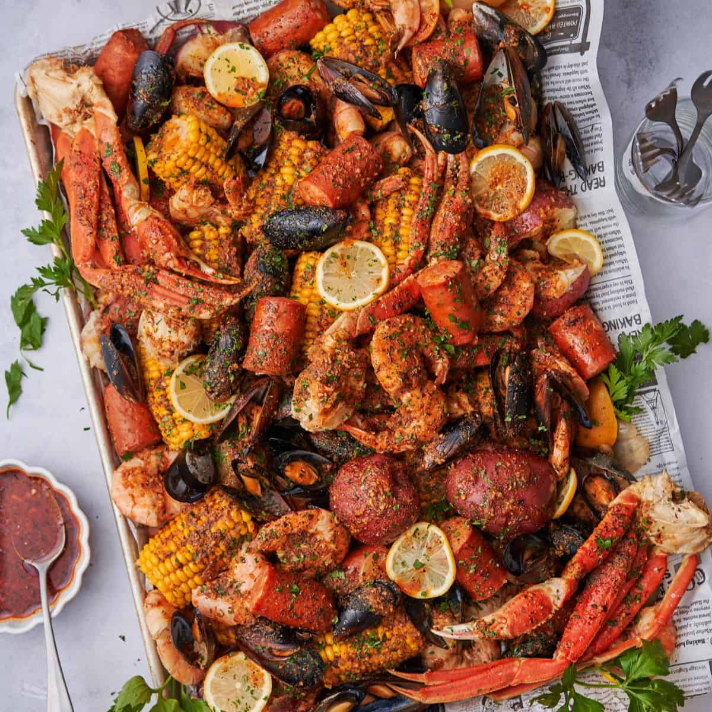

Seafood Cajun Recipes

This Seafood Boil recipe has an amazing assortment of your favorite seafood and veggies tossed in a flavorful and aromatic Cajun sauce. It's buttery and garlicky with a hint of tanginess and can be as spicy as you want it to be! It's the perfect dish to serve on your next boodle fight with family and friends.
Ingredients
- 4-6 small crabs
- 500 grams shrimp
- 500 grams mussels/clams
- 300 grams squid rings/calamari
- 2 pieces lemon 1 cut into 4 wedges and 1 squeezed for the juice
- 2-3 pieces sweet corn each cut across into 4
- 500 grams baby potatoes washed and drained
- 2 sticks butter margarine
- ½ cup vegetable oil
- 2 heads garlic minced
- ½ cup Cajun Seasoning
- 1 tablespoon sugar
- salt to taste
Instruction
- Place the crabs in a basin and cover it with wet cloth. Place it in the freezer for 10-15 minutes. Take them out of the freezer and turn the crab upside down. Peel the triangular cap back and pierce a knife through directly at the tip of the triangle. Remove the triangular cap completely and scrub and rinse the shell.
- Scrub and rinse the mussels/clams and remove the beard if any.
- Cut off the mustache and legs of shrimp if any and rinse.
- Fill a large pot with 6 cups of water and bring it to a rolling boil. Add the baby potatoes and cook for 5 minutes.
- Add the corn, crabs, mussels/clams, shrimp and 4 lemon wedges,. Add a tablespoon of salt . Cover and cook for another 3 minutes or until all shellfish turn red/orange. Remove the crabs, shrimp, and mussels/clams, and corn from the water. Check if potatoes are cooked through by poking a toothpick through the center and it should go through easily. If not cook them further then remove from water.
- While seafood is cooking, in a large, deep pan or pot, heat the oil and butter over medium heat. Add the minced garlic and cook just until limp and aromatic. Don’t let the garlic brown.
- Add the cajun seasoning, lemon juice, and sugar and stir well. Cook for 2 minutes. Add the squid rings and cook for a minute then add the rest of the seafood, lemon wedges, corn and potatoes. Season with salt if needed. Cook for a minute more then turn off the heat.
- Transfer to a large serving container or serve directly on top of rice, boodle-fight style.